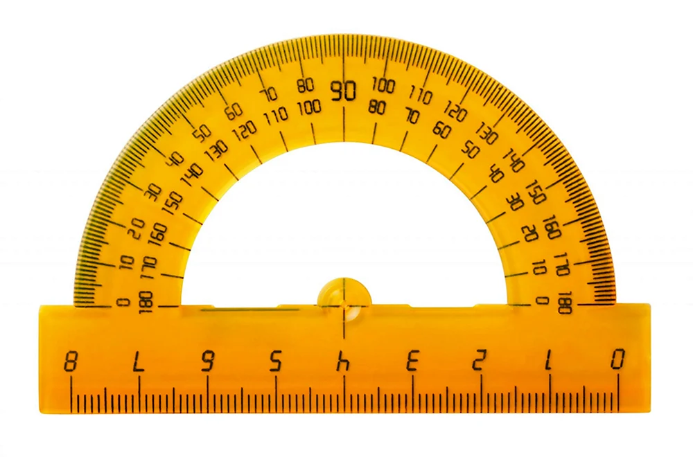
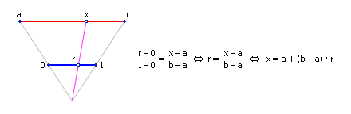

Допустим, что в БД овощной базы (табл. 3.1.) имеется информация о двух объектах - огурце и помидоре, которые по мнению заведующего базой характеризуются пятью признаками.
| Признак | Характерный размер, X1 (0,30) см | Спелость, X2 (0,10) долей | Вес, X3 (0,1) кг | Размножается семечками, X4 (0 | 1) нет | да | Вкус, X5 (0,10) баллов |
|---|---|---|---|---|---|
| Огурец | 10 | 9 | 0.2 | 1 | 2 |
| Помидор | 4 | 7 | 0.1 | 1 | 3 |
Очевидно, что пространство для их описания имеет размерность, равную пяти (n=5), и совпадает с количеством признаков. Пока мы не можем сказать, зависимы ли эти признаки друг от друга или нет, то есть взаимно перпендикулярны оси этой системы координат или нет. Но кое-что мы вычислить уже можем - чем больше расстояние между объектами, тем меньше их сходство и тем больше их различие.
Способ измерения предполагает объявление метрики. В школе используют два инструмента для измерений - линейку и транспортир. Это связно с тем, что в природе, как нам говорят физики, имеется два типа движения - прямолинейное (поступательное) и вращательное (колебательное). Все остальные движения - суть комбинация этих движений. (С появлением фракталов появилось еще движение внутрь и вовне).
Итак, даны координаты двух точек в 5-мерном пространстве: Огурец О(10,9,0.2,1,2) и Помидор П(4,7,0.1,1,3). Зная теорему Пифагора и используя евклидову метрику, найдем расстояние R между точками П и О:
R(П, О) = √((X₁п − X₁о)² + (X₂п − X₂о)² + (X₃п − X₃о)² + (X₄п − X₄о)² + (X₅п − X₅о)²)
В данном случае расстояние между огурцом и помидором равно:
√((10 − 4)² + (9 − 7)² + (0.2 − 0.1)² + (1 − 1)² + (2 − 3)²) ≈ 6.4.
(Разумеется, чтобы какой-то признак на фоне других не терялся, его значения можно отмасштабировать). Однако это не единственная метрика, применяемая в инженерии. Можно, например, возводить разности в k-ю степень и извлекать корень k-ой степени из суммы разностей (метрика Минковского). Применяют также метрики Чебышева, Хемминга, французского метро и другие.

Задания
- Сравните между собой фрукты (груша, яблоко, банан, киви, арбуз, дыня) на похожесть.
- Нарисуйте, где они расположены в 5-мерном пространстве. Нарисуйте их расположение с разных ракурсов.
Наблюдателя S в нашем примере поместим в точку 5-мерного пространства: S(15, 5, 0.5, 0.5, 5). Вектор - это направленный отрезок прямой линии, обозначаемый стрелкой от его конца к его началу. Проведем векторы L1 и L2 от наблюдателя S к наблюдаемым точкам О и П. Чтобы получить размер вектора по каждой оси координат, достаточно из соответствующей координаты его конца вычесть координату его начала.
- Вектор <S-Огурец> = L1 = (-5, 4, -0.3, 0.5, -3)
- Вектор <S-Помидор> = L2 = (-11, 2, -0.4, 0.5, -2)
Найдём косинус угла между векторами L1 и L2 по известной в математике формуле:
cos(А) = ((-5) * (-11) + 4 * 2 + (-0.3) * (-0.4) + 0.5 * 0.5 + (-3) * (-2)) / (√(-5) * (-5) + 4 * 4 + (-0.3) * (-0.3) + 0.5 * 0.5 + (-3) * (-3)) * √((-11) * (-11) + 2 * 2 + (-0.4) * (-0.4) + 0.5 * 0.5 + (-2) * (-2)) = 69.37 / (√50.34 * √129.41) ≈ 0.86.
А = 30.74 (пока для простоты назовём это градусы).
В общем виде:
cos(α) = L1 * L2 / (|L1| * |L2|)
или
cos(α) = (X1 * X2 + Y1 * Y2) / (√(X12 + Y12) * √(X22 + Y22))
Где вектор:
L1 = (X1, Y1), L2 = (X2, Y2), X1 = (Xo - Xs), Y1 = (Yo - Ys), X2 = (Xп - Xs), Y2 = (Yп - Ys).
Если пространство n-мерно, то в числителе дроби содержится n слагаемых в виде произведений проекции первого вектора на проекцию второго вектора
на соответствующую ось: X1 * X2 + Y1 * Y2 + Z1 * Z2 + …, называемых скалярным произведением векторов
L1 и L2, а в знаменателе |L1| - длина первого вектора
√(X12 + Y12 + Z12 + …),
умноженная на длину второго вектора
|L2| = √(X22 + Y22 + Z22 + … ).
Где X1, Y1, Z1, … - проекции первого из векторов
на соответствующие оси координат
X, Y, Z, …
А X2, Y2, Z2, … - проекции второго вектора на
соответствующие оси координат X, Y, Z, …
